54:23 · 21 OPERE
Fernando Pessoa: per una teoresi della sconfitta.
Il filo del discorso
Il percorso di Fernando Pessoa viene letto come una forma di resistenza ai criteri ordinari del successo. Per il relatore, la sconfitta apparente del poeta custodisce vite, possibilità e significati che il mondo pratico tende a comprimere. Gli eteronimi e le prose del Libro dell’inquietudine aprono una riflessione sui limiti della biografia e della critica: isolare pochi versi non basta a spiegare una opera, e leggere significa anche produrre nuovi significati. La vicenda di Ofélia e i confronti con Lukács, Goethe, Kafka, Fromm e Schlegel conducono al rapporto fra amore, bisogno e immaginazione. L’Ode marittima e Il marinaio sviluppano il sogno come costruzione di mondi; il Faust riporta infine la intelligenza davanti a una vita che non le risponde. La scheda segue questi passaggi senza trasformare gli eteronimi in diagnosi, le interpretazioni sentimentali in fatti biografici certi o i frammenti postumi in libri compiuti.
I libri nel discorso

Don Chisciotte della Mancia
Copertina: Newton Compton · Vintage · edizione di riferimento
Don Chisciotte e i mulini espliciti nel confronto iniziale.
Passaggio 3:10 ↗ · Fonti e libro ↗
Il libro dell’inquietudine (Livro do Desassossego)
Copertina: Opera postuma pubblicata per la prima volta nel 1982; frammenti con assetti e selezioni diversi nelle edizioni successive. Copertina corrente Newton Compton, Vintage 67, rilegato, 416 pagine, a cura di Piero Ceccucci, traduzioni di Orietta Abbati e Piero Ceccucci, ISBN 9791224208372. Il catalogo consultato non determina qui la data della ristampa. Non è la copertina della edizione Feltrinelli di Tabucchi e de Lancastre.
Immagine autentica dell’opera, controllata visivamente; l’edizione di riferimento non è attribuita al filmato.
Titolo e Bernardo Soares espliciti, con riprese e letture.
Passaggio 4:36 ↗ · Fonti e libro ↗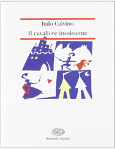
Il cavaliere inesistente
Copertina: Romanzo originale Einaudi, 1959. Copertina della edizione Einaudi Scuola nel catalogo Mondadori Education, ISBN 9788828606123. Il catalogo corrente indica 180 pagine, mentre precedenti cataloghi della medesima configurazione ne riportano 192: non si ricostruisce una tiratura dal solo dato commerciale. Immagine autentica di 188 × 244 pixel, definizione limitata dichiarata.
Immagine autentica dell’opera, controllata visivamente; l’edizione di riferimento non è attribuita al filmato.
Autore e titolo espliciti.
Passaggio 6:27 ↗ · Fonti e libro ↗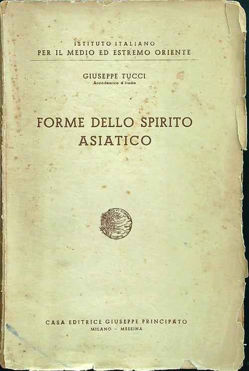
Forme dello spirito asiatico
Identificazione probabile
Copertina: Milano–Messina, Casa Editrice Giuseppe Principato, 1940, per l’Istituto Italiano per il Medio ed Estremo Oriente. Copertina autentica fotografata, con autore, titolo e marchio Principato leggibili; usura e mancanze ai bordi conservate nella immagine. Nessun ISBN moderno attribuito a questo volume del 1940.
Immagine autentica dell’opera, controllata visivamente; l’edizione di riferimento non è attribuita al filmato.
Tucci, spirito asiatico e anno1940: titolo probabilmente identificato da catalogo e citazione.
Passaggio 9:31 ↗ · Fonti e libro ↗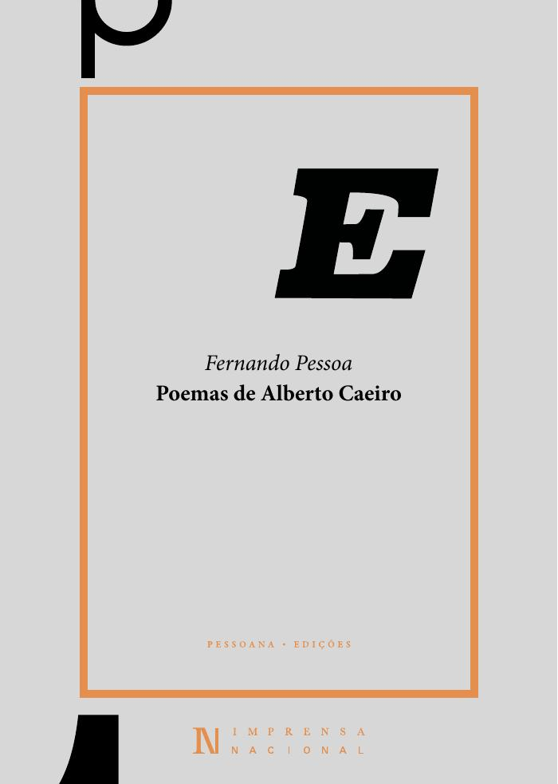
Se, depois de eu morrer, quiserem escrever a minha biografia
Identificazione probabile
Copertina della raccolta digitale Poemas de Alberto Caeiro, Imprensa Nacional 2020 · contiene la poesia, non edizione autonoma: Fernando Pessoa, Poemas de Alberto Caeiro, edição de Ivo Castro, ed. digital gratuita, Lisboa, Imprensa Nacional, 2020.
Copertina autentica della raccolta digitale portoghese 2020, resa dalla prima pagina del PDF editoriale a 120 dpi. L’indice (p. 9) e il testo (pp. 74–75, Poemas Inconjuntos n. 19) provano che contiene il componimento. Non è una copertina autonoma della poesia né l’edizione della traduzione italiana pronunciata nel video. Il colophon p. 4 autorizza la riproduzione indicando questa provenienza; il PDF integrale resta privato.
Segmenti 107–110, 692.40–723.12 s: nome di Alberto Caeiro e lettura italiana del passo biografico; l’incipit, le due date e i giorni intermedi corrispondono al componimento 19, Poemas Inconjuntos, collazionato integralmente nelle pp. 74–75 dell’edizione INCM 2020. Fonte automatica, senza ascolto umano.
Passaggio 11:41 ↗ · Fonti e libro ↗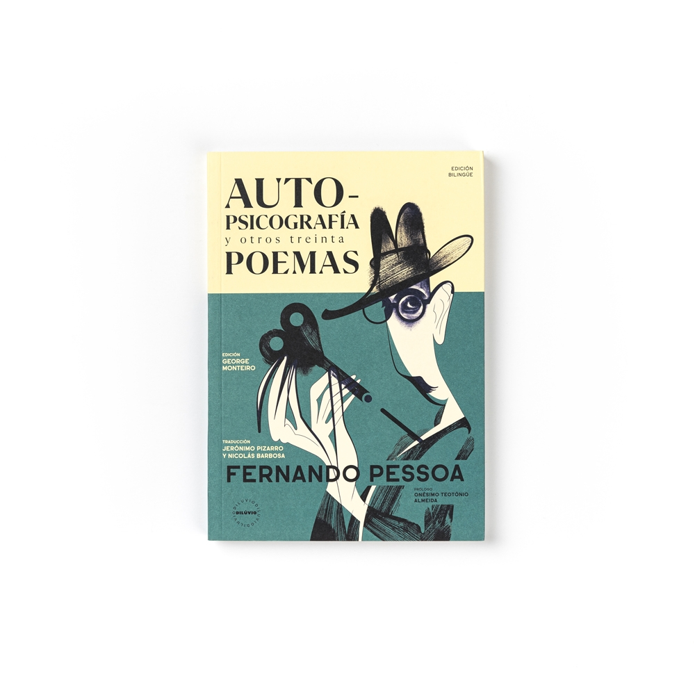
Autopsicografia
Identificazione probabile
Antologia Autopsicografía y otros treinta poemas · contiene la poesia: Componimento datato 1 aprile 1931, pubblicato in Presença nel novembre 1932. Immagine della antologia bilingue portoghese–spagnolo Autopsicografía y otros treinta poemas, Dilúvio, 2023, a cura di George Monteiro, traduzioni di Jerónimo Pizarro e Nicolás Barbosa, illustrazioni di André Carrilho, prefazione di Onésimo Teotónio Almeida, ISBN 9789895365753. È una raccolta che contiene il testo, non una edizione autonoma della poesia o la traduzione italiana ascoltata.
Fotografia autentica del volume illustrato, vista interamente sul sito del museo. La copertina è un oggetto editoriale riconoscibile e non un ritratto generico di Pessoa; la antologia bilingue non viene attribuita al relatore.
Versi del poeta fingitore riconoscibili; titolo non pronunciato e traduzione non collazionata.
Passaggio 20:05 ↗ · Fonti e libro ↗
La metamorfosi
Copertina: Marsilio · 2024
Copertina autentica controllata visivamente. Edizione di riferimento; non identifica l’esemplare usato o citato nel video.
Titolo esplicito nel discorso sulle interpretazioni dei critici.
Passaggio 23:09 ↗ · Fonti e libro ↗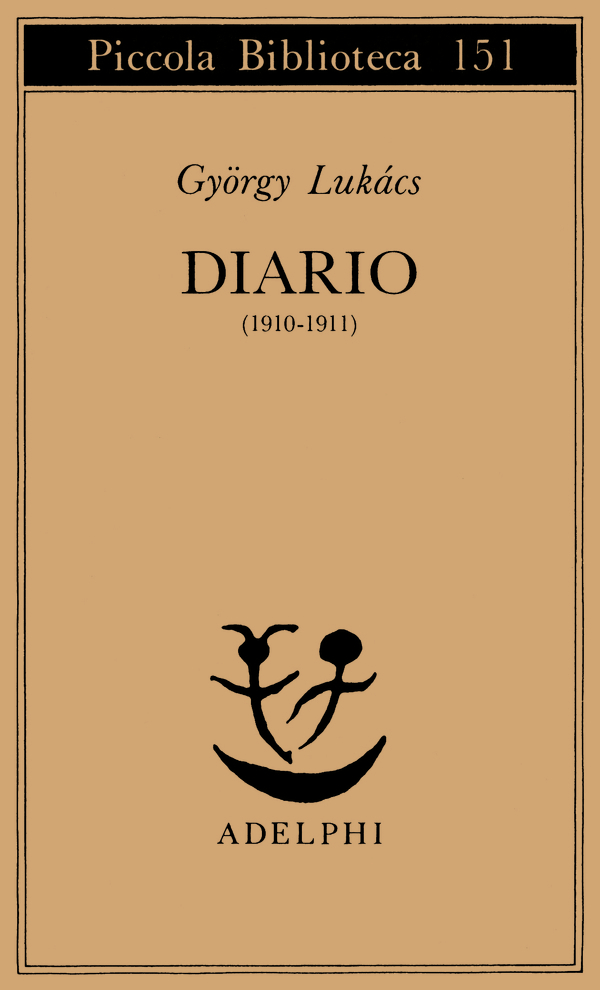
Diario (1910–1911)
Copertina: Edizione italiana Adelphi, Piccola Biblioteca 151, 1983, 148 pagine, a cura di Gabriella Caramore, con il saggio di Massimo Cacciari, ISBN 9788845905339. La pagina editoriale corrente riporta la terza edizione; non ne viene determinata separatamente la data di stampa. Il diario riguarda il 1910–1911 e il contesto di Irma Seidler e Leo Popper, non il successivo matrimonio con Edith Keller.
Immagine autentica dell’opera, controllata visivamente; l’edizione di riferimento non è attribuita al filmato.
Diario di Lukács e passo su Stein/Ifigenia riconoscibili, riscontrati nella bibliografia critica.
Passaggio 26:14 ↗ · Fonti e libro ↗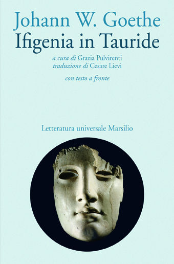
Ifigenia in Tauride (Iphigenie auf Tauris)
Copertina: Dramma di Goethe, versione in versi pubblicata nel 1787 dopo una precedente forma in prosa. Copertina Marsilio, 2011, 256 pagine, a cura di Grazia Pulvirenti, traduzione di Cesare Lievi, testo originale a fronte, ISBN 9788831707695. La edizione bibliografica non è attribuita a Lukács o al relatore.
Immagine autentica dell’opera, controllata visivamente; l’edizione di riferimento non è attribuita al filmato.
Ifigenia di Goethe esplicita nella citazione di Lukács.
Passaggio 26:50 ↗ · Fonti e libro ↗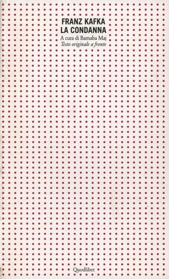
La condanna (Das Urteil; Il verdetto; La sentenza)
Copertina: Scritto nella notte del 22–23 settembre 1912 e pubblicato in Arkadia nel 1913. Copertina della edizione Quodlibet con testo tedesco a fronte e cura di Barnaba Maj, ISBN 9788874621477. Libraccio indica il 2005, il record del curatore a Bologna il 2008: la tiratura non è stabilita e la discrepanza 95/96 pagine è conservata, senza trasferire 1912 alla prima pubblicazione.
Immagine autentica dell’opera, controllata visivamente; l’edizione di riferimento non è attribuita al filmato.
Titolo e rapporto con la dedica a Felice Bauer espliciti.
Passaggio 27:23 ↗ · Fonti e libro ↗
L’arte di amare
Identificazione probabile
Copertina: Mondadori · Oscar Absolute · 2016 · traduzione di Marilena Damiani
Copertina autentica di riferimento, controllata visivamente. L’edizione non è identificata come quella usata nel video.
Formula sull’amore maturo e sul bisogno riconoscibile come L’arte di amare, senza titolo pronunciato.
Passaggio 31:07 ↗ · Fonti e libro ↗
La vita è sogno (La vida es sueño)
Copertina del volume con il dramma e l’auto sacramental: Adelphi · Piccola Biblioteca 252 · 1990 · a cura di Luisa Orioli
Copertina autentica del volume Adelphi che comprende il dramma La vita è sogno e l’auto sacramental omonimo. La voce riguarda il dramma; il richiamo del relatore non identifica questa edizione italiana.
Calderón de la Barca e La vita è sogno espliciti.
Passaggio 33:46 ↗ · Fonti e libro ↗
Zibaldone di pensieri
Identificazione probabile
Copertina: Feltrinelli · Universale Economica, I classici
Leopardi, realtà e illusioni: passo riconoscibile dello Zibaldone99, senza titolo pronunciato.
Passaggio 33:57 ↗ · Fonti e libro ↗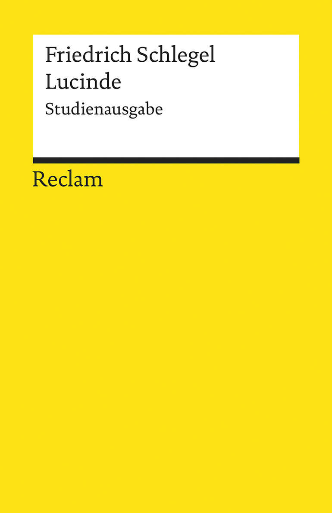
Lucinde
Copertina: Opera originale del 1799. Copertina della Studienausgabe tedesca, Reclam Universal-Bibliothek 19659, a cura di Stefan Knödler, 25 settembre 2020, 183 pagine, ISBN 9783150196595. Il volume offre il testo della prima edizione, commento e postfazione; non è una traduzione italiana.
Immagine autentica dell’opera, controllata visivamente; l’edizione di riferimento non è attribuita al filmato.
Schlegel e il romanzo Lucinde espliciti.
Passaggio 37:04 ↗ · Fonti e libro ↗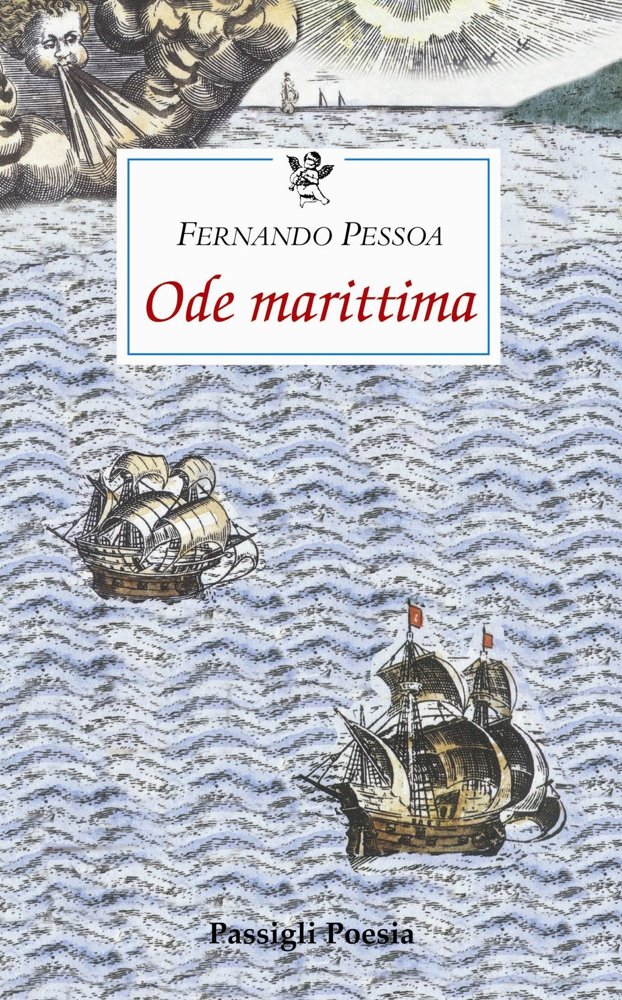
Ode marittima (Ode Marítima)
Copertina: Pubblicato in Orpheu 2 nel giugno 1915. L’immagine distribuita dalla pagina Passigli corrisponde al precedente ISBN 9788836814039, edizione 2013, a cura di Paolo Collo, testo portoghese a fronte, circa 99/100 pagine secondo i cataloghi. La pagina corrente descrive anche una nuova edizione 2026, ISBN 9788836825059, 104 pagine: questi dati non sono attribuiti alla vecchia copertina.
Copertina autentica Passigli vista interamente. Il nome del file editoriale contiene l’ISBN della edizione 2013; la modifica della scheda commerciale nel 2026 non rende automaticamente nuova la copertina già presente. Edizione letta nel filmato non determinata.
Ode marittima di Álvaro de Campos e lettura del molo espliciti.
Passaggio 37:48 ↗ · Fonti e libro ↗
Il marinaio (O Marinheiro)
Copertina: Composto nel 1913 e pubblicato il 24 marzo 1915 in Orpheu 1. Copertina di Il marinaio. Dramma statico in un quadro, Edizioni Theoria, Futuro anteriore, 2024, 64 pagine, ISBN 9788854983915, con un saggio introduttivo di Linda Rossi e Rosa Anna Rita Costanzo. È una edizione successiva di riferimento; non si attribuisce al relatore questa traduzione o la precedente edizione Einaudi di Antonio Tabucchi.
Immagine autentica dell’opera, controllata visivamente; l’edizione di riferimento non è attribuita al filmato.
Titolo, scena e lunga lettura del sogno del marinaio espliciti.
Passaggio 39:48 ↗ · Fonti e libro ↗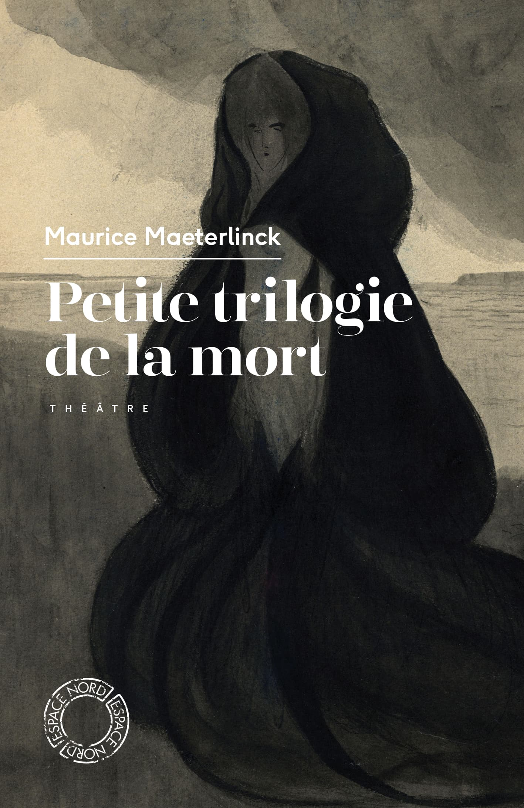
I ciechi (Les Aveugles)
Petite Trilogie de la mort · raccolta contenente Les Aveugles: Dramma del 1890. Copertina della raccolta francese Petite Trilogie de la mort, Espace Nord 294, agosto 2021, 340 pagine, postfazione di Fabrice van de Kerckhove, ISBN 9782875685452; contiene L’Intruse, Les Aveugles e Les Sept Princesses. La immagine non è la copertina di una edizione autonoma di I ciechi né una scena della pièce di Pessoa.
Immagine autentica dell’opera, controllata visivamente; l’edizione di riferimento non è attribuita al filmato.
I ciechi di Maeterlinck nominato come confronto letterario.
Passaggio 40:03 ↗ · Fonti e libro ↗
Aspettando Godot (En attendant Godot)
Copertina: En attendant Godot, Les Éditions de Minuit, ISBN 9782707301482, catalogo corrente 128 pagine. Copertina intera bianca e blu con due figure; l’opera è pubblicata nel 1952, scritta nel 1948–1949 e rappresentata per la prima volta il 5 gennaio 1953. L’immagine corrente non è attribuita al primo tiraggio del 1952.
Immagine autentica dell’opera, controllata visivamente; l’edizione di riferimento non è attribuita al filmato.
Aspettando Godot di Beckett nominato per confronto, non come fonte anteriore a Pessoa.
Passaggio 40:03 ↗ · Fonti e libro ↗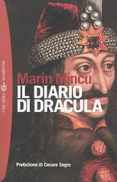
Il diario di Dracula
Copertina: Prima edizione italiana Bompiani, 1992, con prefazione di Cesare Segre e uno scritto di Piero Bigongiari, 220 pagine, secondo la bibliografia universitaria. Copertina della successiva brossura Bompiani 2004, Tascabili. Romanzi e racconti, ISBN 9788845201332. Definizione limitata della immagine di catalogo, 199 × 308 pixel, dichiarata.
Immagine autentica dell’opera, controllata visivamente; l’edizione di riferimento non è attribuita al filmato.
Titolo e Marin Mincu espliciti, nome corretto rispetto alla ASR.
Passaggio 45:51 ↗ · Fonti e libro ↗
Faust (Fausto)
Copertina: Opera incompiuta e postuma; le diverse ricomposizioni editoriali dei frammenti non equivalgono a un testo definitivo approvato dall’autore. Copertina della traduzione francese di P. Léglise-Costa e André Velter, Christian Bourgois, Titres 71, 3 gennaio 2008, 304 pagine, ISBN 9782267019568, dopo il grande formato francese 1990. La pagina presenta anche un sottotitolo incongruo relativo a Quaresma: la immagine e la descrizione del libro raffigurato recano Faust.
Immagine autentica dell’opera, controllata visivamente; l’edizione di riferimento non è attribuita al filmato.
Faust di Pessoa esplicito nella conclusione.
Passaggio 49:47 ↗ · Fonti e libro ↗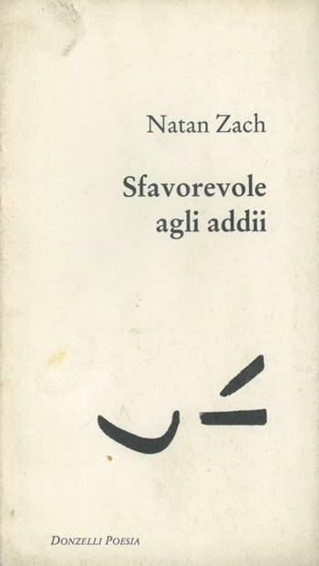
Sfavorevole agli addii
Copertina: Donzelli, Roma, 1996, collana Poesia, scelta e traduzione di Ariel Rathaus, 96 pagine, ISBN 9788879892636. La raccolta seleziona versi di periodi diversi; non si assegna senza riscontro al 1996 la data di composizione di ogni poesia inclusa. Copertina autentica di un esemplare con tracce di ingiallimento.
Immagine autentica dell’opera, controllata visivamente; l’edizione di riferimento non è attribuita al filmato.
Natan Zach e titolo della raccolta espliciti.
Passaggio 52:48 ↗ · Fonti e libro ↗Minutaggi ricavati da testi automatici, da riascoltare. Le identificazioni probabili sono segnalate accanto ai libri.